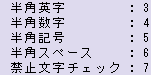
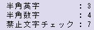
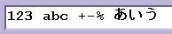
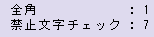

34567
|
For alphanumeric.
(Including sign and space)
|
alphabet : 3
number : 4
sign : 5
space : 6
forbidden char check : 7

|
347
|
For alphanumeric.
(Excluding sign and space)
|
alphabet : 3
number : 4
forbidden char check : 7

|
17

|
Double -byte charactor
(If '1' is set, include all kind of charactors can be used.)
|
double-byte charactor : 1
forbidden char check : 7

|
<Information>
• The IME mode of the forcused textbox can be turned off by adding ’8’ to InputMode.
• It is possible to use it as a text box for the password input by adding ’9’ at the end of inputMode.
|